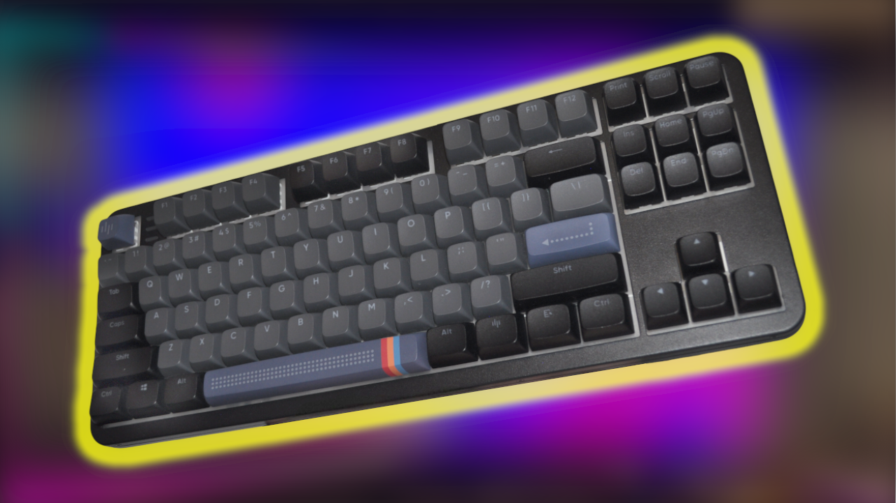

ALU87A Midnight - a surprisingly solid budget mechanical keyboard
I bought this one myself and I’ll be blunt: for 249 zł (about 69$), the ALU87A Midnight from Dark Project gives more value than it has any right to.
Quick summary
A heavy, metal-bodied, hot-swap TKL with doubleshot ABS keycaps (CSA profile), pre-lubed linear switches, full RGB and a surprising bundle of extras. It’s not perfect, there is no wrist rest, limited angle adjustment and the web-based Chromium-only software are annoyances - but for a first mechanical keyboard or a cheap “modder’s” board it’s excellent.
What's in the box
* Keyboard (ANSI-TKL),
* Braided USB-C cable (1.8 m),
* Keycap + switch puller,
* 4 spare switches,
* 12 spare springs and 4 spare screws,
* Anti-slip feet,
* Warranty card + short manual,
That accessory list is unusually generous at this price, especially the extra switches and springs. Small detail, but it matters if you like tinkering.First impressions and build
Take it out of the wrapping and it feels like a proper keyboard: the aluminum case is solid (around 1.5 kg), sturdy and gives a premium impression. The keyboard is hot-swap, so swapping switches is easy, great for experimenting.
Keycaps are doubleshot ABS in CSA profile (an ergonomic, sculpted profile). The layout is ANSI-TKL: compact without a numpad and with a straight, long Enter key. Some will miss the numpad, others will like the desk space saved.
Switches and sound
This unit ships with G3MS Zircon Speed linear switches. They arrive pre-lubed from the factory, which makes them feel smooth and subdued out of the box. They’re not the absolute quietest mechanical switches, but they produce a low, pleasant thocky sound rather than a sharp click. During faster typing you still get a satisfying rhythmic tap that’s not hurting your ears.
If you like to mod keyboards later, the hot-swap socket plus included springs make it an easy starting point.
What I didn’t like
* No proper tilt adjustment. You get the small rubber feet included, but there’s no substantial angle adjustment like flip-out legs of different heights. For some people that’s a dealbreaker.
* Software is browser-only and Chromium-centric. If you use Firefox, the manufacturer’s web app won’t work, because it relies on Chromium. Desktop app or wider browser support would be better.
* No wrist rest. Basic, but a padded wrist rest would improve long sessions.
* Large keys feel stiff at first. Shift, Enter and Backspace required more force initially; they softened up a bit after some use. Could be a QC variance, but something to be aware of.